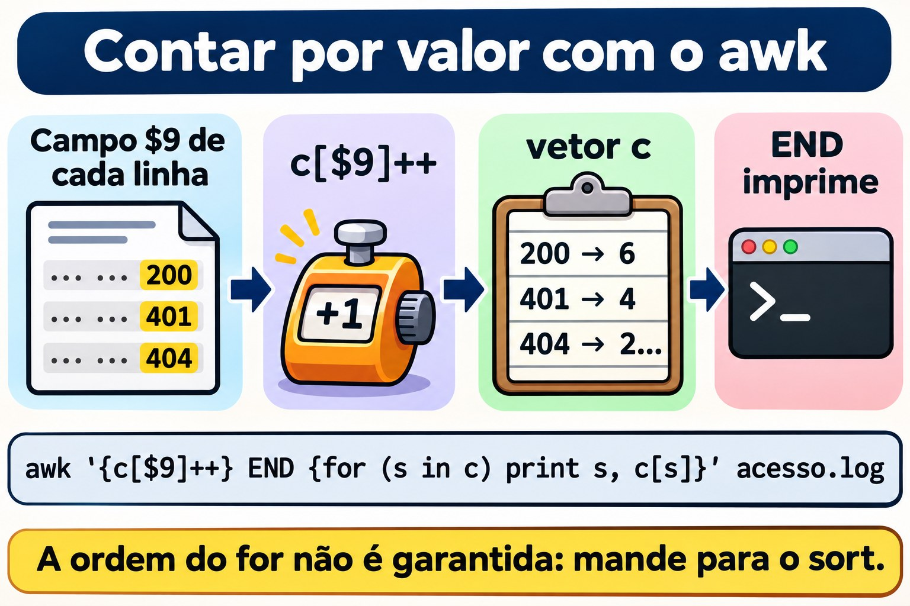
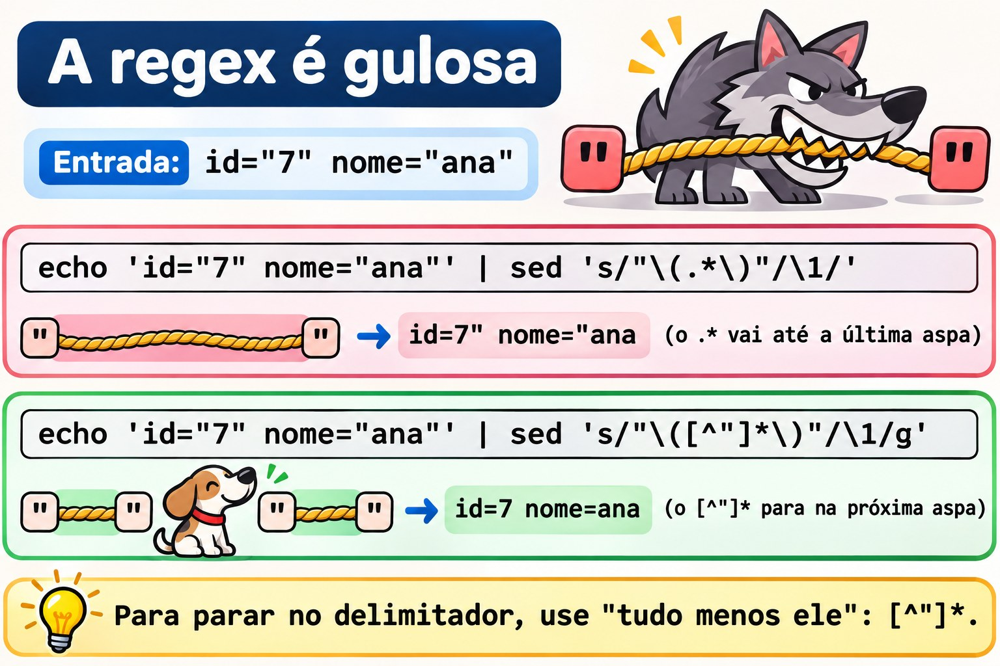
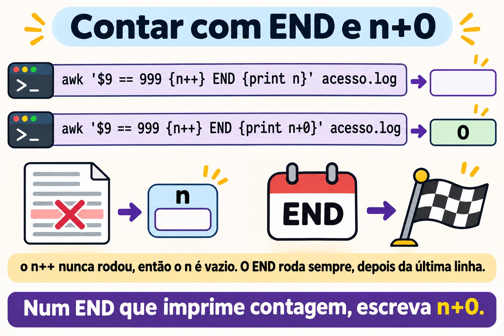
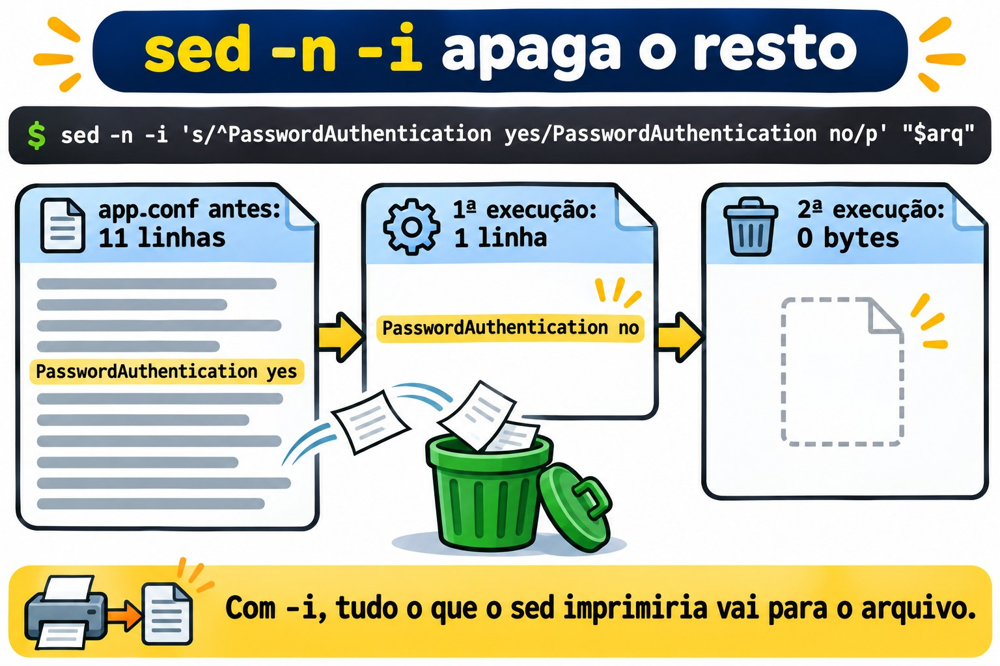

Aula 3.4 · sed e awk
Na Aula 3.3 você escolheu linhas com o grep. Hoje você faz as outras duas coisas que todo administrador faz com texto: mudar linhas e calcular com colunas. O sed troca, apaga e insere linhas, na tela ou dentro do arquivo. O awk separa cada linha em campos, filtra por valor, soma, conta e formata. Os dois são pequenos, estão em toda máquina Linux, e são exatamente o que um script de produção usa quando precisa mexer num arquivo de configuração ou tirar um número de um log. No fim, você fecha o desafio do Módulo 3: os dez IPs que mais erraram a senha no SSH, numa linha de comando, nas duas VMs.
| Ficha | Aula 3.4 |
|---|---|
| Módulo | M3 · Texto e editor, aula 4 de 5 |
| Quando | Semana 8 |
| Ao final você consegue | Mostrar, apagar e trocar linhas com o sed, por número, por intervalo e por regex; usar grupos, & e outro delimitador no s///; editar um arquivo no lugar com sed -i sem perder nada, com cópia e conferência; separar campos com o awk, com o separador padrão e com -F; filtrar por valor, somar, contar com vetores e formatar com printf; cruzar dois arquivos com NR == FNR; passar variáveis do shell para o awk sem brigar com as aspas; saber quando um script de awk da Rocky (gawk) não roda igual na Debian (mawk); listar os IPs que mais erraram a senha no SSH, em arquivo e no journal |
| Pré-requisitos | Aula 3.1 (aspas, pipes, <( )); Aula 3.2 (cut, sort, uniq -c, ~/lab32/acesso.log); Aula 3.3 (BRE e ERE, ~/lab33 com as amostras) |
| Tempo | Cerca de 2h30 |
| Snapshots | m3a4-inicio e m3a4-fim nas duas VMs |
1 · Aquecimento
Três perguntas, de cabeça. Escreva as respostas; o Gabarito confere no fim.
- Você roda
sed 's/yes/no/' app.confe a tela mostra o arquivo com a troca feita. Palpite: oapp.confmudou? - Num log de SSH, a data é
Nov 3, com dois espaços, porque o dia tem um dígito só. Palpite: o quecut -d' ' -f2mostra nessa linha? Eawk '{print $2}'? - Um script de
awkfunciona na Rocky. Você copia o mesmo arquivo para a Debian, roda, e ele não dá erro nenhum. Palpite: pode sair um resultado diferente?
2 · Por que importa
Quase todo desastre com sed e awk acontece numa linha só, sem mensagem de erro:
| O chamado | A resposta errada | O que ela causa |
|---|---|---|
"Troca o servidor de banco de 10.1.0.40 para 10.1.0.41 no app.conf" | sed 's/10.1.0.40/10.1.0.41/' app.conf | A tela mostra a troca, mas o arquivo continua igual: sem -i, o sed só escreve na saída. E o ponto da regex ainda casaria com 10a1b0c40 |
"Descomenta o PermitRootLogin do sshd_config" | sed -i 's/^#//' /etc/ssh/sshd_config | Descomenta todas as linhas que começam com #, inclusive as frases de explicação. O sshd não aceita a configuração e não sobe no próximo restart. Se você estava conectado por SSH, foi a última vez |
| "Desliga a senha no SSH e mostra o que mudou" | sed -n -i 's/yes/no/p' arquivo | O -n com o -i grava no arquivo só as linhas impressas. O arquivo de configuração vira uma linha só. Rodando de novo, vira um arquivo vazio |
| "Quantos bytes cada IP baixou hoje?" | cut para tirar as colunas e a soma numa planilha | Meia hora de copiar e colar. Um awk '{b[$1] += $10} END {...}' responde em um segundo, e roda de novo amanhã |
| "Tira o dia de cada linha do log de SSH" | cut -d' ' -f2 | Funciona do dia 10 ao 31 e devolve uma linha em branco do dia 1 ao 9, porque os dias de um dígito vêm com dois espaços. O script passa no teste e falha na primeira semana do mês |
| "O relatório funciona na Rocky; na Debian sai vazio" | Copiar o mesmo script de awk para as duas | A Rocky tem o gawk; a Debian, o mawk. Um recurso só do gawk pode simplesmente não funcionar no mawk, sem erro nenhum |
O sed e o awk não são difíceis. São literais: fazem exatamente o que está escrito, na linha inteira, em todas as linhas. Quem sabe disso testa antes, na tela, e só depois grava no arquivo.
3 · Modelo mental
O
sede oawksão um laço sobre as linhas. Osedlê uma linha, aplica os comandos, em ordem, e imprime o resultado. Oawklê uma linha, separa em campos, testa cada padrão e roda a ação dos que casaram. Nenhum dos dois volta atrás nem olha a linha seguinte (a não ser que você peça). Pense sempre "o que acontece com cada linha?", e não "o que acontece com o arquivo?".
sed 's/yes/no/' app.conf
┌─────────────┐ lê uma linha ┌──────────────────┐ aplica s/yes/no/ ┌──────────────┐
│ app.conf │ ────────────────► │ espaço de padrão │ ───────────────────► │ imprime │
│ (só leitura)│ │ "Password... yes"│ (só a 1ª vez, │ na saída │
└─────────────┘ └──────────────────┘ sem o g) └──────────────┘
e repete para a próxima linha. Com -n, só imprime quando você manda (p).
Com -i, a "saída" é um arquivo novo que, no fim, toma o lugar do original.
awk '$9 >= 400 {print $1, $9}' acesso.log
linha: 192.168.5.7 - - [03/Nov/2026:08:02:30 +0100] "POST /login HTTP/1.1" 401 128
└── $1 ───┘ $2 $3 └──────── $4 ────────┘ └$5─┘ └─$6─┘ └─$7─┘ └─ $8 ──┘ $9 $10
NF = 10, $NF = $10
BEGIN { ... } roda uma vez, antes da primeira linha
padrão { ação } para cada linha: se o padrão é verdadeiro, roda a ação
END { ... } roda uma vez, depois da última linha (NR = total de linhas)Duas consequências práticas. Primeira: o sed sem -i nunca muda o arquivo, então dá para testar à vontade. Segunda: o awk separa os campos por qualquer sequência de espaços e tabulações, e ignora os espaços do começo da linha. É por isso que ele não tropeça no Nov 3, e o cut -d' ' tropeça.

4 · Conceito em camadas
Essencial
O sed, o editor de fluxo. O nome vem de stream editor. Ele recebe texto de um arquivo ou de um pipe e escreve o resultado na saída. A forma de quase todo uso é:
sed [opções] 'endereço comando' arquivoO endereço diz em quais linhas o comando age; sem endereço, age em todas. O comando diz o que fazer:
| Comando | Faz | Exemplo |
|---|---|---|
p | Imprime a linha (de novo, se você não usou -n) | sed -n '3p' arq mostra só a linha 3 |
d | Apaga a linha da saída | sed '1d' arq mostra tudo menos a linha 1 |
s/regex/troca/ | Troca o primeiro trecho que casa | sed 's/yes/no/' arq |
s/regex/troca/g | Troca todos os trechos que casam, na linha | sed 's/:/ /g' arq |
q | Para de ler | sed '5q' arq é um head -n 5 |
| Endereço | Quais linhas | Exemplo |
|---|---|---|
N | A linha número N | sed -n '3p' |
$ | A última | sed -n '$p' é um tail -n 1 |
N,M | Da N até a M | sed -n '2,4p' |
/regex/ | As que casam com a regex | sed -n '/401/p' é um grep 401 |
/a/,/b/ | Da primeira que casa com a até a próxima que casa com b | sed -n '/^Port/,/^Password/p' |
endereço! | As que não são do endereço | sed '/^#/!d' deixa só os comentários |
E as três opções que você usa todo dia:
| Opção | Faz |
|---|---|
-n | Não imprime nada sozinho; só o que você mandar com p |
-E | Regex estendida, como o grep -E da Aula 3.3: +, ?, {}, | e ( ) sem barra |
-i | Grava o resultado no próprio arquivo. -i.bak guarda antes uma cópia com o sufixo .bak |
O awk, a linguagem das colunas. O awk lê cada linha, separa em campos e roda um pequeno programa. A forma é:
awk 'padrão { ação }' arquivoSem padrão, a ação roda em toda linha. Sem ação, a linha que casou é impressa inteira. Os nomes que você precisa saber:
| Nome | É | Exemplo |
|---|---|---|
$0 | A linha inteira | awk '{print $0}' é um cat |
$1, $2... | O primeiro, o segundo campo... | awk '{print $1}' |
NF | Quantos campos a linha tem | $NF é o último campo; $(NF-1), o penúltimo |
NR | O número da linha atual (no fim, o total) | awk 'NR == 3' é o sed -n '3p' |
-F | O separador de campos | awk -F: '{print $1}' /etc/passwd |
BEGIN, END | Antes da primeira linha, depois da última | awk 'END {print NR}' é um wc -l |
Padrões são comparações ($9 >= 400, $1 == "10.1.0.20"), regex (/Failed password/, $7 ~ /^\/api/) ou as duas coisas com &&, || e !. Variáveis não precisam ser declaradas: começam valendo zero, ou texto vazio. Por isso {n++} conta, e {soma += $10} soma.
As aspas. O programa do awk e do sed vai sempre entre aspas simples. O $1 do awk é o primeiro campo; o $1 do shell é o primeiro argumento do script. Entre aspas duplas, o shell troca o $1 dele antes de o awk ver.
Intermediário
O s/// por dentro.
| Parte | Faz | Exemplo e resultado |
|---|---|---|
& | O trecho inteiro que casou | echo 'Port 22' | sed 's/[0-9][0-9]*/[&]/' mostra Port [22] |
\(...\) e \1 | Grupo na BRE e a referência a ele | sed 's/^\([^ ]*\) .*/\1/' deixa só a primeira palavra |
(...) e \1 com -E | O mesmo, na ERE | sed -E 's/^([^ ]+) .*/\1/' |
g | Todas as ocorrências da linha | s/\//_/g |
| Um número | Só a N-ésima ocorrência | s/\//_/2 troca só a segunda barra |
I (GNU) | Ignora maiúsculas | s/passwordauthentication/PA/I |
p com -n | Imprime só as linhas em que houve troca | sed -n 's/^Port /porta: /p' |
| Outro delimitador | Qualquer caractere logo depois do s vira o separador | s|/home/rodrigo|~| em vez de s/\/home\/rodrigo/~/ |
O delimitador é a primeira coisa que salva um sed com caminhos. Com barra, cada / do caminho precisa de \/, e o comando vira cerca de madeira. Com |, # ou ,, fica legível.
Vários comandos. Separe com ; ou use vários -e. Os comandos rodam em ordem, na mesma linha:
sed '/^[[:space:]]*#/d; /^[[:space:]]*$/d' conf.amostra
sed -e 's/yes/no/' -e '/^#/d' conf.amostraO primeiro é o grep -Ev '^[[:space:]]*(#|$)' da Aula 3.3, escrito em sed. A ordem importa: se a primeira troca transformasse uma linha em comentário, a segunda já a veria comentada.
Inserir, acrescentar, trocar a linha inteira. No GNU sed, numa linha só:
| Comando | Faz | Exemplo |
|---|---|---|
i texto | Insere uma linha antes | sed '1i # gerado pelo lab' arq |
a texto | Acrescenta uma linha depois | sed '/^Port/a # porta padrão' arq |
c texto | Troca a linha inteira | sed '/^MaxAuthTries/c MaxAuthTries 4' arq |
y/abc/xyz/ | Troca caractere por caractere, como o tr | sed 'y/abc/ABC/' |
l | Mostra a linha com os invisíveis, como o cat -A | sed -n '9l' conf.amostra mostra \t#ListenAddress 0.0.0.0$ |
O awk que calcula.
| Você quer | Programa |
|---|---|
| Contar as linhas que casam | '$9 >= 400 {n++} END {print n+0}' |
| Somar uma coluna | '{soma += $10} END {print soma}' |
Contar por valor (o sort | uniq -c do awk) | '{c[$9]++} END {for (s in c) print s, c[s]}' |
| Somar por valor | '{b[$1] += $10} END {for (ip in b) print b[ip], ip}' |
| Formatar | printf "%-15s %10d\n", ip, b[ip]: texto alinhado à esquerda em 15 posições, número à direita em 10 |
| Receber um valor do shell | awk -v lim="$LIMITE" '$10 > lim' |
| Regex num campo | '$7 ~ /^\/api/' e '$6 !~ /GET/' |
| Funções de texto | length($1), substr($4, 2, 11), tolower($0), split($4, p, ":") |
| Trocar dentro do campo | sub(/regex/, "troca", $7) troca o primeiro; gsub troca todos |
| Pular para a próxima linha | next |
O c[$9]++ é um vetor associativo: o índice é o próprio texto, "200", "401", "10.1.0.20". É o que torna o awk tão útil para relatório. Um cuidado: o for (x in v) percorre os índices numa ordem que não é garantida, e que muda entre o gawk e o mawk. Sempre que a ordem importar, mande a saída para o sort.
O separador de saída. No print $1, $2, a vírgula vira o OFS, que vale um espaço. Com -v OFS=';', vira ponto e vírgula. Mas print sozinho, ou print $0, mostra a linha como ela entrou. Para remontar a linha inteira com o OFS novo, mexa num campo: {$1 = $1; print}.


Ponte Windows
| No Windows | No Linux | Cuidado |
|---|---|---|
(Get-Content app.conf) -replace '^PasswordAuthentication yes$', 'PasswordAuthentication no' | sed 's/^PasswordAuthentication yes$/PasswordAuthentication no/' app.conf | O -replace do PowerShell ignora maiúsculas por padrão; o sed, não. O equivalente exato é o -creplace |
(Get-Content app.conf) -replace 'a', 'b' | Set-Content app.conf | sed -i 's/a/b/' app.conf | Os parênteses fazem o PowerShell ler o arquivo inteiro antes de gravar. Sem eles, o Set-Content tenta escrever no arquivo que ainda está aberto para leitura, e dá erro. O sed -i resolve isso gravando num arquivo temporário |
$1, $2 no -replace | \1, \2 no sed | Mesma ideia de grupo, sintaxe diferente. No Notepad++, também é \1 |
Get-Content acesso.log | ForEach-Object { ($_ -split '\s+')[0] } | awk '{print $1}' acesso.log | O PowerShell conta do zero; o awk, do um |
Import-Csv -Delimiter ':' -Header nome,x,uid ... | awk -F: '{print $1, $3}' | O Import-Csv entende aspas em CSV; o awk -F, não entende |
Group-Object e Sort-Object Count -Descending | awk '{c[$1]++} END {...}' | sort -rn | |
Measure-Object -Property Bytes -Sum | awk '{s += $10} END {print s}' |
Avançado
O sed -i cria um arquivo novo. Ele escreve o resultado num arquivo temporário, na mesma pasta, e no fim troca o original por ele. O GNU sed copia as permissões, mas o arquivo é outro, com outro número de inode. Isso tem três consequências reais:
- Um link simbólico editado com
sed -ivira um arquivo comum, e o arquivo para onde ele apontava fica intacto. Para seguir o link:sed -i --follow-symlinks. - Um link físico (Aula 2.8) deixa de ser compartilhado: o outro nome continua apontando para o conteúdo antigo.
- Um log que está sendo escrito não deve ser editado com
sed -i. O programa continua escrevendo no inode antigo, já sem nome, e as linhas novas se perdem, ocupando disco até o programa reiniciar.
-i.bak e o -ie que engana. O sufixo da cópia vem colado no -i. Por isso sed -ie 's/...//' arq não é "-i e -e": é -i com sufixo e, e você ganha um arquivo arqe ao lado. No macOS e nos BSD, o -i exige o sufixo sempre (sed -i '' ...). Num script que precisa rodar nos dois, prefira gravar num arquivo novo e trocar com mv.
O espaço de reserva. O sed tem um segundo espaço, o hold space, com os comandos h, H, g, G e x. Com ele se escrevem truques como sed -n '1!G;h;$p', que inverte o arquivo como o tac. Saiba reconhecer; para escrever coisas assim, use o awk, que é legível.
Separadores com regex. O -F do awk aceita regex: -F'[ :]+' separa por qualquer sequência de espaços e dois-pontos. Mas -F, não entende CSV de verdade: um campo "Rossi, Ana" vira dois. Para CSV com aspas, o gawk tem FPAT, e há ferramentas próprias, como o csvtool.
Número ou texto. Um campo que parece número é comparado como número: $9 >= 400 funciona. Mas "80%" não parece número. O +0 força a conversão e para no primeiro caractere que não é dígito: $5+0 de 80% é 80. É assim que se lê o df: df -P | awk 'NR > 1 && $5+0 >= 80 {print $6, $5}'.
Dois arquivos. NR conta as linhas de todos os arquivos juntos; FNR, só as do arquivo atual. Enquanto os dois são iguais, o awk está lendo o primeiro arquivo. É o jeito clássico de carregar uma lista e usá-la no segundo, o join que a Aula 3.2 prometeu:
awk 'NR == FNR {bloq[$1]; next} $1 in bloq' bloqueio.txt acesso.loggawk e mawk. O gawk tem extensões que o mawk não tem: gensub(), asort(), asorti(), IGNORECASE, PROCINFO["sorted_in"], FPAT, o -i inplace e o \y de borda de palavra. Uma função que não existe dá erro na hora. Uma variável especial que não existe, como IGNORECASE, vira uma variável comum, e o script roda calado, com outro resultado. Na Rocky, o gawk --posix desliga as extensões, e o gawk --lint avisa quais você usou: os dois testam a portabilidade antes de o script chegar na Debian.
O awk também roda comandos. system("...") e "comando" | getline executam coisas no shell. Num script de awk que você não escreveu, procure por esses dois antes de rodar com sudo.
5 · Rocky × Debian
| Item | rocky-lab (Rocky 9) | debian-lab (Debian 13) | Como conferir |
|---|---|---|---|
sed | GNU sed 4.8 | GNU sed 4.9 | sed --version | head -1 |
awk | gawk 5.1 | mawk 1.3.4 | readlink -f "$(command -v awk)" |
Versão do awk | awk --version ou awk -W version | awk -W version | O -W version funciona nos dois |
Extensões do gawk | Funcionam | gensub() dá erro; IGNORECASE é ignorado, calado | gawk --lint -f script.awk na Rocky |
| Testar portabilidade | gawk --posix -f script.awk | mawk -f script.awk | Rode nos dois e compare a saída com diff |
gawk disponível | Já vem | Só se alguém instalou (apt install gawk) | command -v gawk |
| Log de senha errada no SSH | /var/log/secure, gravado pelo rsyslog, com rotação semanal | Só no journal, unidade ssh | ls -l /var/log/secure*; journalctl -u ssh -n 3 |
| Journal | Volátil, a não ser que você tenha mudado na Aula 2.3 | Permanente | ls -ld /var/log/journal |
| Nome do processo no log | sshd[PID] | Pode aparecer sshd-session[PID], porque o OpenSSH 10 separou o processo da sessão | journalctl -u ssh -n 5 -o short |
sed -i em link simbólico | Quebra o link | Quebra o link | ls -l antes e depois |
A linha que mais pega é a do awk. Os dois são awk de verdade, seguem o POSIX e rodam 95% dos programas igual. É nos outros 5% que um script copiado de um servidor para outro dá resultado diferente sem avisar. Na Quebra B você vê isso acontecer.
A do processo também. Um grep 'sshd\[' acha as linhas da Rocky e pode não achar nenhuma na Debian 13. Por isso o lab filtra pela unidade (journalctl -u ssh) e pelo texto (Failed password), e nunca pelo nome do processo.
6 · Lab guiado
Você é o rodrigo, na rocky-lab, e alcança a debian-lab pelo ssh deb. Tudo acontece em ~/lab34, nas duas VMs. O sed -i só é usado em cópias dentro da pasta do lab. Os arquivos do sistema e os logs reais só são lidos. O Passo 7 é o desafio do Módulo 3.

Passo 0 · Snapshot, pasta e os arquivos do lab
No Proxmox, tire o snapshot m3a4-inicio das duas VMs. Na rocky-lab:
eval "$(ssh-agent -s)"; ssh-add
ssh -o BatchMode=yes deb hostname
mkdir -p ~/lab34; ssh deb 'mkdir -p ~/lab34'
cd ~/lab34
cp ~/lab33/acesso.log ~/lab33/ssh.amostra ~/lab33/conf.amostra ~/lab33/bloqueio.txt .
wc -l acesso.log ssh.amostra conf.amostra bloqueio.txt 15 acesso.log
12 ssh.amostra
11 conf.amostra
3 bloqueio.txt
41 totalSe faltar algum, recrie com o Passo 0 da Aula 3.3 (o acesso.log vem da Aula 3.2). O bloqueio.txt tem 203.0.113.9, 198.51.100.4 e uma linha vazia no fim, de propósito. Agora as versões, nas duas VMs:
sed --version | head -1; readlink -f "$(command -v awk)"; awk -W version 2>/dev/null | head -1
ssh deb 'sed --version | head -1; readlink -f "$(command -v awk)"; awk -W version 2>/dev/null | head -1'Na Rocky você deve ver o GNU sed 4.8 e o awk apontando para o gawk, versão 5.1. Na Debian, o GNU sed 4.9 e o awk apontando para o mawk, versão 1.3.4. Anote o que saiu: a Quebra B depende disso. Copie os arquivos para a Debian:
scp acesso.log ssh.amostra conf.amostra bloqueio.txt deb:lab34/
ssh deb 'cd ~/lab34 && wc -l acesso.log ssh.amostra conf.amostra bloqueio.txt'Passo 1 · Mostrar e apagar
Primeiro, o sed como um head, um tail e um grep:
sed -n '3p' acesso.log
sed -n '$p' acesso.log
sed -n '2,4p' acesso.log | cut -d' ' -f110.1.0.20 - - [03/Nov/2026:08:01:02 +0100] "GET /docs HTTP/1.1" 200 2048
10.1.0.20 - - [03/Nov/2026:08:07:30 +0100] "GET / HTTP/1.1" 200 5120
10.1.0.31
10.1.0.20
192.168.5.7Agora você quer ver as tentativas de login que falharam, as linhas com 401. E esquece o -n.
Decida 1 · Quantas linhas mostra sed '/401/p' acesso.log | wc -l?
- A) 4
- B) 15
- C) 19
- D) 11
Escolha a letra antes de olhar a tabela.
sed '/401/p' acesso.log | wc -l
sed -n '/401/p' acesso.log | wc -l19
4| Se você marcou | Resultado | Por quê |
|---|---|---|
| A | ❌ Errada | É o resultado com -n. Sem ele, o sed imprime toda linha no fim do ciclo, e o p imprime de novo as que casaram. |
| B | ❌ Errada | Seria verdade se o p não fizesse nada. Ele faz: imprime a linha mais uma vez. |
| C | ✅ Certa | As 15 linhas, uma vez cada, mais as 4 com 401 repetidas: 15 + 4 = 19. |
| D | ❌ Errada | Seriam as linhas sem 401 (15 − 4). Isso é o sed '/401/d'. |
Para fixar: o p quase sempre anda com o -n. Sem o -n, o p duplica as linhas.
O d faz o contrário: tira a linha da saída. Este é o grep -Ev '^[[:space:]]*(#|$)' da Aula 3.3, em sed:
sed '/^[[:space:]]*#/d; /^[[:space:]]*$/d' conf.amostraPort 22
PermitRootLogin no
PasswordAuthentication yes
MaxAuthTries 3Os dois comandos rodam em ordem na mesma linha. Uma linha apagada pelo primeiro não chega ao segundo: o d encerra o ciclo daquela linha na hora.
Passo 2 · A troca: s, g e o delimitador
Você quer trocar as barras de um caminho por sublinhados, para virar nome de arquivo.
Decida 2 · O que mostra echo 'GET /a/b/c HTTP/1.1' | sed 's/\//_/'?
- A)
GET _a_b_c HTTP_1.1 - B)
GET _a/b/c HTTP/1.1 - C)
GET /a/b/c HTTP/1.1, sem mudança - D) Um erro, por causa da barra dentro do padrão
Escolha a letra antes de olhar a tabela.
echo 'GET /a/b/c HTTP/1.1' | sed 's/\//_/'
echo 'GET /a/b/c HTTP/1.1' | sed 's/\//_/g'
echo 'GET /a/b/c HTTP/1.1' | sed 's|/|_|g'
echo 'GET /a/b/c HTTP/1.1' | sed 's|/|_|2'GET _a/b/c HTTP/1.1
GET _a_b_c HTTP_1.1
GET _a_b_c HTTP_1.1
GET /a_b/c HTTP/1.1| Se você marcou | Resultado | Por quê |
|---|---|---|
| A | ❌ Errada | É o resultado com o g. Sem ele, o s troca só a primeira ocorrência de cada linha. |
| B | ✅ Certa | O \/ é uma barra literal. A primeira barra da linha vira _, e o resto fica como estava. |
| C | ❌ Errada | Casou, e trocou. O s só não muda nada quando a regex não casa em lugar nenhum da linha. |
| D | ❌ Errada | Com \, a barra deixa de ser delimitador. Sem a \, aí sim: s///_/ dá unknown option to 's'. |
Para fixar: sem g, só a primeira ocorrência de cada linha. Com caminhos, troque o delimitador: s|/|_|g se lê de primeira.
O número no lugar do g escolhe qual ocorrência: o 2 trocou só a segunda barra. Dois usos que você vai repetir muito: o p com -n, que mostra só as linhas trocadas, e o I, que ignora maiúsculas.
sed -n 's/^Port /porta: /p' conf.amostra
sed -n 's/passwordauthentication/PA/Ip' conf.amostraporta: 22
PA yes
#PA noPasso 3 · Grupos, & e a regex gulosa
Do acesso.log, você quer só o IP e o código de status. Com -E, os parênteses guardam o trecho, e o \1 e o \2 o devolvem:
sed -E 's/^([^ ]+) .*" ([0-9]{3}) .*/\1 \2/' acesso.log | head -410.1.0.20 200
10.1.0.31 200
10.1.0.20 200
192.168.5.7 401O [^ ]+ é "um ou mais caracteres que não são espaço": o IP inteiro e nada mais. O .*" engole tudo até a última aspa seguida de espaço, e o ([0-9]{3}) pega os três dígitos que vêm logo depois. Para mandar um log para um fornecedor sem expor as máquinas, zere o último octeto:
sed -E 's/^([0-9]+\.[0-9]+\.[0-9]+)\.[0-9]+/\1.0/' acesso.log | cut -d' ' -f1 | sort -u
echo 'Port 22' | sed 's/[0-9][0-9]*/[&]/'10.1.0.0
192.168.5.0
203.0.113.0
Port [22]O & é o trecho inteiro que casou, sem precisar de grupo. Agora o erro que todo mundo comete uma vez. Você quer tirar as aspas dos valores de uma linha de configuração:
Decida 3 · O que mostra echo 'id="7" nome="ana"' | sed 's/"\(.*\)"/\1/'?
- A)
id=7 nome=ana - B)
id=7" nome="ana - C)
id="7" nome=ana - D)
7
Escolha a letra antes de olhar a tabela.
echo 'id="7" nome="ana"' | sed 's/"\(.*\)"/\1/'
echo 'id="7" nome="ana"' | sed 's/"\([^"]*\)"/\1/g'id=7" nome="ana
id=7 nome=ana| Se você marcou | Resultado | Por quê |
|---|---|---|
| A | ❌ Errada | É o que você queria. Para isso, o grupo não pode atravessar aspas: [^"]*, com o g. |
| B | ✅ Certa | O .* é guloso: casa com o trecho mais longo possível. Vai da primeira aspa da linha até a última, e só essas duas somem. |
| C | ❌ Errada | Seria uma regex que começa a casar pelo fim. A regex começa pelo primeiro ponto possível da linha, a primeira aspa. |
| D | ❌ Errada | O s só troca o trecho que casou. O id=, antes da primeira aspa, fica. |
Para fixar: .* vai o mais longe que puder. Para parar no próximo delimitador, use "tudo menos ele": [^"]*, [^ ]*, [^:]*.


Passo 4 · sed -i sem susto
Agora o sed vai gravar em arquivo. Trabalhe numa cópia. O roteiro seguro tem três passos: ver a diferença na tela, gravar com cópia, conferir.
cp conf.amostra app.conf
sed 's/^PasswordAuthentication yes/PasswordAuthentication no/' app.conf | diff app.conf -; echo "diff saiu com $?"7c7
< PasswordAuthentication yes
---
> PasswordAuthentication no
diff saiu com 1O - diz ao diff para ler a entrada do pipe. A saída mostra exatamente uma linha mudada, a 7. O 1 do diff quer dizer "são diferentes", e não é erro. Se a saída mostrasse vinte linhas, você teria descoberto o problema antes de estragar o arquivo. Agora grave, com cópia, e confira:
ls -i app.conf
sed -i.bak 's/^PasswordAuthentication yes/PasswordAuthentication no/' app.conf
ls -i app.conf; ls app.conf*
diff app.conf.bak app.confO número de inode muda: o sed -i escreveu um arquivo novo e trocou o antigo por ele. O app.conf.bak é o original, e o diff mostra as mesmas linhas da prévia. Agora um link simbólico, para ver o que acontece com ele:
ln -s app.conf link.conf; ls -l link.conf
sed -i 's/^Port 22/Port 2222/' link.conf
ls -l link.conf app.conf; grep -H '^Port' link.conf app.confAntes, o ls -l mostra link.conf -> app.conf. Depois, o link.conf é um arquivo comum, sem a seta, com Port 2222. O app.conf continua com Port 22. Num servidor em que /etc/algo.conf é um link para um arquivo gerenciado, essa troca passa despercebida até alguém editar o arquivo de verdade e nada mudar. Com sed -i --follow-symlinks, o sed edita o arquivo para onde o link aponta. Limpe e recomece do original:
rm link.conf; cp conf.amostra app.conf; rm -f app.conf.bakSeu colega manda um comando com "as opções juntas, que é mais rápido":
Decida 4 · O que acontece com sed -ie 's/^PasswordAuthentication yes/PasswordAuthentication no/' app.conf?
- A) O
app.confé alterado, e nada mais - B) O
app.confé alterado, e aparece umapp.confecom o conteúdo antigo - C) Erro: opção inválida
- D) Nada muda, porque o
eexecuta a troca como um comando do shell
Escolha a letra antes de olhar a tabela.
sed -ie 's/^PasswordAuthentication yes/PasswordAuthentication no/' app.conf
ls app.conf*
grep -c '^PasswordAuthentication no' app.conf app.confeapp.conf app.confe
app.conf:1
app.confe:0| Se você marcou | Resultado | Por quê |
|---|---|---|
| A | ❌ Errada | Seria o caso de sed -i -e, com as opções separadas. Juntas, o e vira outra coisa. |
| B | ✅ Certa | O sufixo da cópia vem colado no -i. -ie é "-i com sufixo e". A troca foi feita, e a cópia se chama app.confe. |
| C | ❌ Errada | A sintaxe é válida, e é por isso que engana: nenhum aviso. |
| D | ❌ Errada | O e como flag do s (no fim, s/.../.../e) executa comandos no GNU sed. Como opção colada no -i, é só um sufixo. |
Para fixar: escreva -i.bak ou -i -e, nunca -ie. Um ls depois do sed -i mostra as cópias com nome estranho.
Limpe a sobra: rm app.confe.
Passo 5 · Campos com o awk
Agora as colunas. O awk separa cada linha pelos espaços e numera os pedaços:
awk '{print $1, $9}' acesso.log | head -3
awk 'END {print NR}' acesso.log
head -1 ssh.amostra | awk '{print $2, $NF, NF}'
head -1 ssh.amostra | cut -d' ' -f2 | cat -A10.1.0.20 200
10.1.0.31 200
10.1.0.20 200
15
3 ssh2 14
$O Nov 3 tem dois espaços. Para o cut -d' ', isso é um campo vazio entre eles, e o -f2 sai em branco, como o cat -A mostra. Para o awk, qualquer sequência de espaços é um separador só: o $2 é o 3. O NF diz que a linha tem 14 campos, e o $NF é o último, ssh2.
Você coloca o programa entre aspas duplas, "para variar":
Decida 5 · O que mostra awk "{print $1}" acesso.log | head -1?
- A)
10.1.0.20 - B) A linha inteira
- C) Um erro de sintaxe do
awk - D) Uma linha vazia
Escolha a letra antes de olhar a tabela.
awk "{print $1}" acesso.log | head -1
echo "{print $1}"10.1.0.20 - - [03/Nov/2026:08:00:01 +0100] "GET / HTTP/1.1" 200 5120
{print }| Se você marcou | Resultado | Por quê |
|---|---|---|
| A | ❌ Errada | Seria com aspas simples. Entre aspas duplas, o shell troca o $1 antes de o awk ver. |
| B | ✅ Certa | No terminal, o $1 do shell está vazio. O awk recebe {print }, e o print sem nada imprime a linha inteira. |
| C | ❌ Errada | {print } é um programa válido. Por isso o erro é traiçoeiro: nada avisa. |
| D | ❌ Errada | O print sem argumento não imprime vazio; imprime o $0. Dentro de um script que recebeu argumentos, o $1 seria o primeiro argumento, e o resultado mudaria de novo. |
Para fixar: o programa do awk vai entre aspas simples, sempre. Valor do shell entra por -v.
O -F muda o separador. No /etc/passwd, são dois-pontos. Usuários de gente têm UID a partir de 1000:
awk -F: '$3 >= 1000 {print $1, $3}' /etc/passwd
awk -F: '$3 >= 1000 && $3 < 65534 {print $1, $3}' /etc/passwdO primeiro lista também o nobody, com UID 65534, que é uma conta de sistema, nas duas distribuições. O segundo deixa só as pessoas. Na Rocky, deve sair o rodrigo e os usuários que você criou no Módulo 2.
Passo 6 · Filtrar, somar e contar
Um padrão sem ação imprime a linha. Uma comparação é um padrão:
awk '$9 >= 400' acesso.log | wc -l
awk '$9 >= 400 {print $1, $9, $7}' acesso.log | head -3
awk '$7 ~ /^\/api/ {print $1, $7, $9}' acesso.log
awk '$6 !~ /GET/' acesso.log | wc -l9
192.168.5.7 401 /login
192.168.5.7 401 /login
203.0.113.9 403 /admin
10.1.0.20 /api/status 500
10.1.0.31 /api/status 500
5Agora o que o cut não faz: contas. A soma dos bytes, os bytes por IP e os pedidos por status:
awk '{s += $10} END {print s}' acesso.log
awk '{b[$1] += $10} END {for (ip in b) printf "%-15s %10d\n", ip, b[ip]}' acesso.log | sort -k2,2nr
awk '{c[$9]++} END {for (s in c) print s, c[s]}' acesso.log | sort1068928
10.1.0.45 1048576
10.1.0.20 12352
192.168.5.7 4608
10.1.0.31 2112
203.0.113.9 1280
200 6
401 4
403 1
404 2
500 2O b[$1] += $10 soma os bytes num vetor cujo índice é o IP. O printf alinha, e o sort -k2,2nr ordena pelo segundo campo, como número, do maior para o menor. O sort no fim é obrigatório: o for (ip in b) não promete ordem nenhuma, e o mawk da Debian devolve outra ordem que a do gawk. Rode o mesmo na Debian e compare.
Um valor do shell entra com -v:
LIMITE=1000
awk -v lim="$LIMITE" '$10 > lim {print $1, $10}' acesso.log | wc -l6Seu script de alerta conta os erros 999, que não existem, e manda o número por e-mail:
Decida 6 · O que mostra awk '$9 == 999 {n++} END {print n}' acesso.log?
- A)
0 - B) Uma linha vazia
- C) Nada: nenhuma linha casou, então o
ENDnão roda - D) Um erro, porque
nnunca foi definido
Escolha a letra antes de olhar a tabela.
awk '$9 == 999 {n++} END {print n}' acesso.log | cat -A
awk '$9 == 999 {n++} END {print n+0}' acesso.log$
0| Se você marcou | Resultado | Por quê |
|---|---|---|
| A | ❌ Errada | É o que o n+0 mostra. Sem a conta, a variável nunca tocada vale texto vazio. |
| B | ✅ Certa | O n++ nunca rodou. O n é vazio, e o print imprime vazio e a quebra de linha: o cat -A mostra só o $. |
| C | ❌ Errada | O END roda sempre, depois da última linha, tenha algo casado ou não. |
| D | ❌ Errada | No awk, variável não precisa de declaração. Ela existe, valendo zero ou vazio conforme o uso. |
Para fixar: num END que imprime uma contagem, escreva n+0. O e-mail com "0 erros" é diferente do e-mail com " erros".


Por fim, dois arquivos. O bloqueio.txt tem a lista de IPs bloqueados no firewall. Quais pedidos do log vieram deles?
awk 'NR == FNR {bloq[$1]; next} $1 in bloq' bloqueio.txt acesso.log203.0.113.9 - - [03/Nov/2026:08:03:10 +0100] "GET /admin HTTP/1.1" 403 256
203.0.113.9 - - [03/Nov/2026:08:04:20 +0100] "GET /wp-login.php HTTP/1.1" 404 512
203.0.113.9 - - [03/Nov/2026:08:06:30 +0100] "GET /.env HTTP/1.1" 404 512Enquanto NR == FNR, o awk está no primeiro arquivo: guarda cada IP como índice do vetor e pula para a próxima linha com next. No segundo arquivo, o $1 in bloq é verdadeiro para os IPs da lista. A linha vazia do bloqueio.txt vira um índice vazio, que nenhuma linha do log tem, e não atrapalha. É o join da Aula 3.2, sem precisar ordenar nada antes.
Passo 7 · Desafio do módulo: os dez IPs que mais erraram a senha
O pedido é o de todo começo de incidente: "quem está tentando entrar no SSH?". Primeiro na amostra, onde você sabe a resposta. As linhas de senha errada têm dois formatos:
... Failed password for root from 203.0.113.9 port 51022 ssh2
... Failed password for invalid user admin from 198.51.100.4 port 40110 ssh2Decida 7 · Qual expressão do awk pega o IP nos dois formatos?
- A)
$11 - B)
$13 - C)
$(NF-3) - D)
$NF-3
Escolha a letra antes de olhar a tabela.
awk '/Failed password/ {print $11}' ssh.amostra | sort | uniq -c | sort -rn
awk '/Failed password/ {print $(NF-3)}' ssh.amostra | sort | uniq -c | sort -rn | head -10
awk '/Failed password/ {print $NF-3}' ssh.amostra | head -1 2 admin
2 203.0.113.9
1 test
1 oracle
1 10.1.0.31
3 203.0.113.9
2 198.51.100.4
1 192.0.2.66
1 10.1.0.31
-3| Se você marcou | Resultado | Por quê |
|---|---|---|
| A | ❌ Errada | Funciona na linha normal. Na de invalid user, há duas palavras a mais, e o $11 vira o nome do usuário: admin, oracle e test aparecem como se fossem IPs. |
| B | ❌ Errada | É o contrário: acerta o invalid user e, na linha normal, pega a porta. |
| C | ✅ Certa | Contando do fim, o formato é o mesmo: IP, port, número, ssh2. O IP é sempre o quarto de trás para frente. |
| D | ❌ Errada | Sem parênteses, é ($NF) - 3: o texto ssh2 vale 0 como número, e sai -3. |
Para fixar: quando o começo da linha varia e o fim não, conte do fim: $NF, $(NF-1), $(NF-3).
Os empates (2 admin e 2 203.0.113.9) podem sair em outra ordem, conforme o idioma configurado na VM; os números não mudam. Quando o formato pode variar mais, por exemplo com um nome de usuário que tem espaço, procure a palavra em vez de contar:
awk '/Failed password/ {for (i = 1; i <= NF; i++) if ($i == "from") print $(i+1)}' ssh.amostra | sort | uniq -c | sort -rnO resultado é o mesmo. As duas formas pegam também o IPv6, coisa que o grep -oE 'from [0-9.]+' da Aula 3.3 corta no primeiro :.
Agora o log real. Na Rocky, o /var/log/secure e as rotações da semana:
sudo cat /var/log/secure-* /var/log/secure 2>/dev/null | awk '/Failed password/ {print $(NF-3)}' | sort | uniq -c | sort -rn | head -10Na Debian, só o journal, unidade ssh. O -o cat tira a data e o nome do processo, mas o fim da linha é o mesmo:
ssh -t deb "sudo journalctl -u ssh --no-pager -o cat | awk '/Failed password/ {print \$(NF-3)}' | sort | uniq -c | sort -rn | head -10"Repare no \$(NF-3). O comando inteiro está entre aspas duplas, e o shell local veria $(NF-3) como substituição de comando: tentaria rodar um programa chamado NF-3, daria erro, e o awk receberia print sem nada. A barra protege o $. Escapar à mão em cada comando não escala. O jeito profissional é um script, com o programa do awk entre aspas simples, que roda igual nas duas VMs:
cat > top10.sh <<'EOF'
#!/bin/bash
# top10.sh: os 10 IPs com mais senhas erradas no SSH (Rocky: arquivo; Debian: journal)
{ sudo cat /var/log/secure 2>/dev/null || sudo journalctl -u ssh -u sshd --no-pager -o cat; } |
awk '/Failed password/ {print $(NF-3)}' | sort | uniq -c | sort -rn | head -10
EOF
chmod +x top10.sh
./top10.sh
scp top10.sh deb:lab34/
ssh -t deb 'bash ~/lab34/top10.sh'O 'EOF' com aspas impede o shell de mexer no conteúdo do here-doc (Aula 3.1). O || usa o journal quando o arquivo não existe. O -t dá um terminal ao ssh para o sudo pedir a senha. O script conta só as linhas Failed password. As linhas authentication failure do PAM descrevem a mesma tentativa, e contar as duas dobraria o número.
Se a saída vier vazia, seu lab não sofreu ataque nenhum, o que é bom. Para ver o script trabalhar, erre a senha de propósito: da rocky-lab, rode ssh -o PubkeyAuthentication=no naoexiste@10.1.0.52 e digite qualquer coisa três vezes. Rode ssh -t deb 'bash ~/lab34/top10.sh' de novo: o IP da rocky-lab aparece com 3.
Se você tornou o journal da Rocky permanente na Aula 2.3, ele também tem essas linhas: sudo journalctl -u sshd --no-pager -o cat | awk ... dá o mesmo resultado que o arquivo. Se o journal ainda for volátil, ele só tem o que aconteceu depois do último boot, e o /var/log/secure é a fonte certa.
7 · Quebre e conserte
Quebra A · O script que apaga a configuração
O cenário: um colega escreveu um script para desligar o login por senha nos servidores. Ele queria que o script "mostrasse a linha que mudou", e por isso usou -n e p. Como queria gravar no arquivo, juntou o -i. Monte o script, na rocky-lab, sobre uma cópia:
cd ~/lab34
cat > desliga-senha.sh <<'EOF'
#!/bin/bash
# desliga-senha.sh: desliga o login por senha e mostra a linha que mudou
arq=${1:-app.conf}
sed -n -i 's/^PasswordAuthentication yes/PasswordAuthentication no/p' "$arq"
echo "feito em $arq"
EOF
chmod +x desliga-senha.sh
cp conf.amostra app.conf
./desliga-senha.sh app.conffeito em app.confObserve. O script não mostrou linha nenhuma, só o feito. Não deu erro, e o status é 0.
Decida 8 · O que o app.conf tem agora?
- A) As 11 linhas, com a troca feita
- B) Uma linha só:
PasswordAuthentication no - C) Nada: o arquivo está vazio
- D) As 11 linhas, sem a troca, porque o
-nimpediu a gravação
Escolha a letra antes de olhar a tabela.
wc -l app.conf; cat app.conf
./desliga-senha.sh app.conf
wc -c app.conf1 app.conf
PasswordAuthentication no
feito em app.conf
0 app.conf| Se você marcou | Resultado | Por quê |
|---|---|---|
| A | ❌ Errada | É o que o colega queria. Mas, com -i, a "saída" do sed é o arquivo novo, e o -n manda não escrever nada além do que o p imprimir. |
| B | ✅ Certa | Só a linha trocada foi impressa, e foi impressa dentro do arquivo. Por isso a tela ficou vazia: a linha que deveria aparecer foi para o app.conf. |
| C | ⚠️ Ainda não | É o que acontece na segunda vez. Não há mais yes para trocar, o p não imprime nada, e o arquivo fica com 0 bytes. |
| D | ❌ Errada | O -n não impede a gravação. Ele decide o que é gravado. |
Para fixar: com -i, tudo o que o sed imprimiria vai para o arquivo. -n junto com -i só faz sentido se você quer que o arquivo fique apenas com as linhas do p.
Diagnostique. Num servidor de verdade, esse script deixa o sshd_config com uma linha. O sshd sobe com os valores padrão, o que pode até funcionar, e ninguém percebe até alguém procurar o AllowGroups ou o Port que estavam lá. A segunda execução, pelo cron ou por engano, deixa o arquivo vazio. E não há cópia.


Conserte. O script certo grava com cópia, sem -n, e mostra a diferença comparando o antes com o depois:
cat > desliga-senha.sh <<'EOF'
#!/bin/bash
# desliga-senha.sh: desliga o login por senha, com cópia e conferência
arq=${1:-app.conf}
sed -i.bak 's/^PasswordAuthentication yes/PasswordAuthentication no/' "$arq" || exit 2
if cmp -s "$arq.bak" "$arq"; then
echo "nada a mudar em $arq"
else
diff "$arq.bak" "$arq" || true
fi
EOF
cp conf.amostra app.conf
./desliga-senha.sh app.conf
./desliga-senha.sh app.conf
wc -l app.conf7c7
< PasswordAuthentication yes
---
> PasswordAuthentication no
nada a mudar em app.conf
11 app.confO cmp -s não mostra nada e só responde pelo status: 0 se os arquivos são iguais. Agora o script pode rodar dez vezes que o resultado é o mesmo, e cada execução diz o que fez. Um detalhe: a segunda execução sobrescreve o .bak com o arquivo já trocado. Num servidor, um sufixo com data, como -i".$(date +%F-%H%M%S).bak", guarda todas as versões.
Quebra B · O relatório que some na Debian
O cenário: um relatório conta, por IP, as falhas de login no formulário do site. Quem o escreveu, na Rocky, sabia que alguns clientes mandam post em minúsculas, e usou IGNORECASE para não depender disso. O relatório foi para todos os servidores. Nos da Debian, ele sempre diz que não houve falha nenhuma. Monte, na rocky-lab:
cat > relatorio.awk <<'EOF'
# relatorio.awk: logins que falharam no formulário, por IP
BEGIN { IGNORECASE = 1 }
/post \/login/ && $9 == 401 { falhas[$1]++ }
END { for (ip in falhas) printf "%-15s %d\n", ip, falhas[ip] }
EOF
awk -f relatorio.awk acesso.log
scp relatorio.awk deb:lab34/
ssh deb 'cd ~/lab34 && awk -f relatorio.awk acesso.log; echo "status: $?"'192.168.5.7 4
status: 0Observe. Na Rocky, as quatro falhas de 192.168.5.7. Na Debian, nada, com status 0. Nenhum aviso.
Diagnostique. Na Rocky, peça ao gawk para se comportar como um awk POSIX e para apontar o que não é padrão:
gawk --posix -f relatorio.awk acesso.log; echo "status: $?"
gawk --lint -f relatorio.awk acesso.logO --posix reproduz a Debian: nenhuma linha, status 0. A primeira linha do --lint diz que `IGNORECASE' is a gawk extension. No mawk, e no gawk --posix, o IGNORECASE é uma variável qualquer, que você criou e pôs em 1 sem efeito nenhum. A regex /post \/login/ continua diferenciando maiúsculas, o log tem POST, e nada casa. O --lint também pode reclamar do falhas[$1]++ num elemento ainda vazio; esse aviso é inofensivo, porque um elemento vazio vale zero na soma.
Compare com uma função que só o gawk tem: gawk --posix 'BEGIN {print gensub(/a/, "b", "g", "aaa")}' termina com fatal: function `gensub' not defined e status 2. Função que falta dá erro alto. Variável especial que falta não dá erro nenhum.
Decida 9 · Qual conserto faz o relatório funcionar igual nas duas VMs?
- A) Instalar o
gawkna Debian - B) Trocar o padrão por
tolower($0) ~ /post \/login/ && $9 == 401 - C) Rodar na Debian com
awk -v IGNORECASE=1 -f relatorio.awk - D) Pôr
#!/usr/bin/gawk -fna primeira linha do script
Escolha a letra antes de olhar a tabela.
sed -i.bak 's/^BEGIN.*//; s|^/post|tolower($0) ~ /post|' relatorio.awk
cat relatorio.awk
gawk --posix -f relatorio.awk acesso.log
scp relatorio.awk deb:lab34/; ssh deb 'cd ~/lab34 && awk -f relatorio.awk acesso.log'# relatorio.awk: logins que falharam no formulário, por IP
tolower($0) ~ /post \/login/ && $9 == 401 { falhas[$1]++ }
END { for (ip in falhas) printf "%-15s %d\n", ip, falhas[ip] }
192.168.5.7 4
192.168.5.7 4| Se você marcou | Resultado | Por quê |
|---|---|---|
| A | ⚠️ Funciona, com custo | Resolve neste servidor, mas o script continua quebrado em todo servidor onde ninguém instalou o gawk. E agora o awk de cada Debian depende do que foi instalado nela. |
| B | ✅ Certa | O tolower() é POSIX e existe nos dois. A linha vira minúscula só para a comparação; o $1 e o resto não mudam. |
| C | ❌ Errada | O -v só cria a variável mais cedo. No mawk, ela continua sendo uma variável comum, sem efeito na regex. |
| D | ⚠️ Funciona, com custo | Deixa claro que o script precisa do gawk, e dá erro honesto (No such file) onde ele não existe. É uma boa escolha quando você precisa de uma extensão; aqui, não precisa. |
Para fixar: um script de awk que vai rodar em mais de uma distribuição passa pelo gawk --posix e pelo gawk --lint antes. Se precisar de uma extensão, declare o gawk na primeira linha.
A lição
As duas quebras são o mesmo erro de fundo: confiar que "rodou sem erro" quer dizer "fez o que eu queria". O sed -n -i fez exatamente o que está escrito: gravou só as linhas impressas. O IGNORECASE no mawk também: criou uma variável. Os instrumentos são os de hoje: prévia na tela, com diff, antes de qualquer -i; cópia com -i.bak; conferência depois, com cmp ou diff; e, para awk que viaja, o teste com --posix e --lint. Na vida real, num sshd_config de verdade, ainda há mais duas camadas. Antes de recarregar, sudo sshd -t confere a sintaxe e não mexe em nada. E, em vez de editar o arquivo principal com sed, crie um arquivo seu em /etc/ssh/sshd_config.d/, com um nome que venha antes dos outros, como 00-senha.conf: no sshd, a primeira definição vale (Aula 3.3), o arquivo do pacote fica intacto, e desfazer é apagar um arquivo. Mantenha uma sessão SSH aberta enquanto testa a nova.
8 · Armadilhas
| Você digita ou vê | O que acontece | O certo |
|---|---|---|
sed 's/a/b/' arq e o arquivo "não mudou" | Sem -i, o sed só escreve na saída | Prévia com | diff arq -; depois sed -i.bak |
sed -n -i 's/.../.../p' arq | O arquivo fica só com as linhas trocadas; na segunda vez, vazio | Nunca -n com -i; mostre a mudança com diff arq.bak arq |
sed -ie '...' arq | Cria uma cópia chamada arqe | sed -i.bak '...' ou sed -i -e '...' |
sed -i num link simbólico | O link vira arquivo comum; o arquivo original não muda | sed -i --follow-symlinks, ou edite o destino (readlink -f) |
sed -i num log que está sendo escrito | O programa continua escrevendo no arquivo antigo, sem nome | Não edite log ao vivo; filtre para outro arquivo |
sed 's/\/home\/rodrigo/~/' | Funciona, mas ninguém lê | sed 's|/home/rodrigo|~|' |
sed 's/10.1.0.40/10.1.0.41/' | O ponto casa com qualquer caractere | sed 's/10\.1\.0\.40/10.1.0.41/' |
sed 's/"\(.*\)"/\1/' | O .* vai até a última aspa | sed 's/"\([^"]*\)"/\1/g' |
sed '/401/p' sem -n | As linhas com 401 saem duas vezes | sed -n '/401/p' |
cut -d' ' -f2 em log com Nov 3 | Campo vazio nos dias 1 a 9 | awk '{print $2}' |
awk "{print $1}" | O shell troca o $1; o awk imprime a linha inteira | Aspas simples; valores do shell por -v |
awk '{print $NF-3}' | Faz a conta: último campo menos 3 | $(NF-3) |
END {print n} sem nenhuma linha contada | Imprime uma linha vazia | END {print n+0} |
for (k in v) para um relatório ordenado | A ordem não é garantida, e muda entre gawk e mawk | ... | sort |
IGNORECASE, gensub, asort em script para várias distros | Na Debian, o mawk ignora calado ou dá erro | tolower(), sub/gsub; teste com gawk --posix e --lint |
awk -F, em CSV com "Rossi, Ana" | O campo com vírgula vira dois | gawk com FPAT, ou uma ferramenta de CSV |
ssh deb "awk '{print $(NF-3)}'" | O shell local tenta rodar o comando NF-3 | Script com aspas simples dentro, ou \$ |
9 · Quiz
Dez perguntas, sem consultar. Escreva a letra ou a resposta de cada uma e só depois abra o Gabarito.
1. O que muda no arquivo app.conf depois de sed 's/yes/no/g' app.conf? E depois de sed -i 's/yes/no/' app.conf, numa linha que tem yes duas vezes?
2. Qual comando mostra só da linha 5 até a 10 do arquivo log.txt?
- A)
sed '5,10p' log.txt - B)
sed -n '5,10p' log.txt - C)
sed -n '5p;10p' log.txt - D)
sed '5,10d' log.txt
3. Escreva um sed que troque, no fim de cada linha, .log por .log.old, usando o &.
4. O que echo '2026-11-03' | sed -E 's/([0-9]{4})-([0-9]{2})-([0-9]{2})/\3\/\2\/\1/' mostra? Reescreva com outro delimitador, sem as barras invertidas na troca.
5. Você roda sed -ie 's/80/8080/' site.conf. Quais arquivos existem na pasta depois, e o que tem em cada um?
6. Qual comando mostra o nome e o diretório pessoal (campos 1 e 6) dos usuários com shell /bin/bash no /etc/passwd?
- A)
awk '{print $1, $6}' /etc/passwd - B)
awk -F: '$7 == "/bin/bash" {print $1, $6}' /etc/passwd - C)
cut -d: -f1,6 /etc/passwd | grep bash - D)
awk -F: '/bash/ {print $1 $6}' /etc/passwd
7. Escreva um awk que mostre a média de bytes (campo 10) do acesso.log. O que o seu programa mostra num arquivo vazio?
8. O que é NR == FNR e para que serve num awk com dois arquivos?
9. Um script de awk com IGNORECASE = 1 funciona na Rocky e não acha nada na Debian, sem erro. Por quê? Como você teria descoberto isso na própria Rocky?
10. Which command replaces every occurrence of http:// with https:// in site.conf, editing the file in place and keeping a backup copy?
- A)
sed 's/http:\/\//https:\/\//g' site.conf > site.conf - B)
sed -i.orig 's|http://|https://|g' site.conf - C)
sed -n -i 's|http://|https://|gp' site.conf - D)
sed -i 's|http://|https://|' site.conf
10 · Flashcards e cola
Para saber de cor
- O
sede oawksão um laço sobre as linhas: o que você escreve acontece com cada linha. - Sem
-i, osednunca muda o arquivo. Teste à vontade. panda com-n.-nnunca anda com-i.s/a/b/troca a primeira ocorrência da linha;s/a/b/g, todas;s/a/b/2, só a segunda.&é o trecho que casou;\1é o primeiro grupo. Com-E, os grupos são( )sem barra.- Caminho no padrão: troque o delimitador,
s|/a/b|/c/d|. .*é guloso. Para parar no delimitador:[^"]*,[^ ]*.- O roteiro do
-i: prévia com| diff arq -, gravação com-i.bak, conferência comdiff arq.bak arq. -ieé-icom sufixoe. Escreva-i.bakou-i -e.- O
sed -icria um arquivo novo: link simbólico vira arquivo comum; use--follow-symlinks. - No
awk:$0a linha,$1o primeiro campo,NFquantos campos,$NFo último,NRo número da linha. - O
awksepara por qualquer sequência de espaços; ocut -d' ', por cada espaço. - O programa do
awkvai entre aspas simples. Valor do shell entra com-v. $(NF-3)é o quarto campo do fim;$NF-3é uma conta.END {print n+0}mostra0quando nada foi contado.for (k in v)não tem ordem: termine comsort.NR == FNRé "ainda estou no primeiro arquivo".- Rocky:
gawk. Debian:mawk. Script que viaja passa porgawk --posixegawk --lint.
Para consultar
| Pergunta | Comando |
|---|---|
| Uma linha pelo número | sed -n '3p' arq |
| Um intervalo de linhas | sed -n '5,10p' arq |
| Da linha que casa com A até a que casa com B | sed -n '/A/,/B/p' arq |
| Apagar comentários e linhas em branco | sed '/^[[:space:]]*#/d; /^[[:space:]]*$/d' arq |
| Trocar todas as ocorrências | sed 's/velho/novo/g' arq |
| Trocar só nas linhas com "x" | sed '/x/s/velho/novo/' arq |
| Mostrar só as linhas trocadas | sed -n 's/velho/novo/p' arq |
| Prévia de uma troca | sed 's/velho/novo/' arq | diff arq - |
| Editar no lugar, com cópia | sed -i.bak 's/velho/novo/' arq |
| Inserir antes, acrescentar depois, trocar a linha | sed '/x/i texto', sed '/x/a texto', sed '/x/c texto' |
| Ver tabulações e o fim da linha | sed -n 'l' arq |
| Alguns campos | awk '{print $1, $9}' arq |
| Outro separador | awk -F: '{print $1, $7}' /etc/passwd |
| Linhas por valor de campo | awk '$9 >= 400' arq |
| Regex num campo | awk '$7 ~ /^\/api/' arq |
| Somar uma coluna | awk '{s += $10} END {print s+0}' arq |
| Contar por valor | awk '{c[$9]++} END {for (k in c) print k, c[k]}' arq | sort |
| Somar por valor | awk '{b[$1] += $10} END {for (k in b) print b[k], k}' arq | sort -rn |
| Colunas alinhadas | printf "%-15s %10d\n", $1, $10 |
| Linhas do arquivo 2 cujo campo 1 está na lista | awk 'NR == FNR {l[$1]; next} $1 in l' lista arq |
| Disco acima de 80% | df -P | awk 'NR > 1 && $5+0 >= 80 {print $6, $5}' |
Qual awk é este | readlink -f "$(command -v awk)" |
| Os 10 IPs com mais senhas erradas | awk '/Failed password/ {print $(NF-3)}' | sort | uniq -c | sort -rn | head -10 |
Flashcards
| Frente | Verso |
|---|---|
sed 's/a/b/' arq mudou o arquivo? | Não: sem -i, só a saída |
sed '/x/p' sem -n | As linhas com x saem duas vezes |
s/\//_/ em /a/b | _a/b: só a primeira |
s|/|_|2 | Troca só a segunda ocorrência |
& na troca | O trecho inteiro que casou |
\1 | O primeiro grupo: \( \) na BRE, ( ) com -E |
s/"\(.*\)"/\1/ em a="1" b="2" | a=1" b="2: o .* foi até a última aspa |
sed -ie | Cópia com sufixo e: arqe |
sed -n -i '...p' | O arquivo fica só com as linhas impressas |
sed -i num link simbólico | O link vira arquivo comum |
sed -i e o inode | Muda: é um arquivo novo |
y/abc/ABC/ | Troca caractere por caractere, como o tr |
$NF e $(NF-1) | O último e o penúltimo campo |
NR e FNR | Linha no total; linha no arquivo atual |
awk "{print $1}" no terminal | A linha inteira: o shell comeu o $1 |
$NF-3 | Último campo menos 3, como número |
END {print n} sem nada contado | Linha vazia; use n+0 |
-v OFS=';' e print sozinho | A linha sai como entrou; use $1 = $1 para remontar |
$5+0 de 80% | 80 |
IGNORECASE no mawk | Variável comum, sem efeito, sem erro |
gensub no mawk | Erro: a função não existe |
gawk --posix e gawk --lint | Testar, na Rocky, se o script roda no mawk |
11 · Checklist de saída
- [ ] Mostro, apago e troco linhas com o
sed, por número, intervalo e regex, e explico por quepsem-nduplica. - [ ] Uso
g, número,I,&, grupos com\1e outro delimitador nos///, e evito a regex gulosa com[^x]*. - [ ] Edito um arquivo no lugar com prévia,
-i.bake conferência, e explico o-ie, o-n -ie o link simbólico. - [ ] Separo campos com o
awk, com e sem-F, e explico por que ele não tropeça em espaços repetidos. - [ ] Filtro por valor, somo, conto com vetor e formato com
printf, terminando comsortquando a ordem importa. - [ ] Cruzo dois arquivos com
NR == FNRe passo valores do shell com-v. - [ ] Testo um script de
awkcomgawk --posixe--lintantes de levá-lo para a Debian. - [ ] Listo os 10 IPs com mais senhas erradas no SSH, com um só script, nas duas VMs.
Último exercício, sem olhar. Tudo na debian-lab: entre com ssh deb e trabalhe em ~/lab34. Lá o awk é o mawk. Sem abrir esta aula:
- Do
/etc/passwd, mostre o nome e o shell dos usuários cujo shell não termina emnologinnem emfalse, em duas colunas alinhadas. - Num só
sed, sem mexer noconf.amostra, gere oativo.conf: sem comentários (com ou sem recuo), sem linhas em branco, e comMaxAuthTries 3trocado porMaxAuthTries 4. - Do
acesso.log, mostre para cada código de status o número de pedidos e o total de bytes, ordenado pelo código. - Do
ssh.amostra, mostre cada usuário tentado nas linhasFailed password, marcado comoexistenteouinexistente, com a contagem. - Copie o
/etc/ssh/sshd_configpara~/lab34/sshd.copia. Na cópia, troque a linha#MaxAuthTries 6porMaxAuthTries 3, com cópia de segurança, e mostre a diferença. O arquivo de verdade não é tocado.
Só abra o Gabarito depois disso, ou depois de três tentativas.
Reboot e conferência. Antes de reiniciar, grave as respostas que não podem mudar, nas duas VMs:
cd ~/lab34
awk -f relatorio.awk acesso.log > rel-antes.txt
ssh deb 'cd ~/lab34 && awk -f relatorio.awk acesso.log > rel-antes.txt'
ssh -t deb 'sudo reboot'
sudo rebootDepois de voltar, na rocky-lab:
eval "$(ssh-agent -s)"; ssh-add
cd ~/lab34
awk -f relatorio.awk acesso.log | diff - rel-antes.txt && echo "Rocky: igual"
ssh deb 'cd ~/lab34 && awk -f relatorio.awk acesso.log | diff - rel-antes.txt && echo "Debian: igual"'
cp conf.amostra app.conf; ./desliga-senha.sh app.conf; ./desliga-senha.sh app.conf
./top10.sh
ssh -t deb 'bash ~/lab34/top10.sh'Os dois relatórios iguais, nas duas VMs. O desliga-senha.sh mostrando a diferença na primeira vez e nada a mudar na segunda. E o top10.sh com os mesmos IPs de antes. Na Debian, o journal é permanente, e as tentativas do Passo 7 continuam lá. Na Rocky, o script lê o /var/log/secure, que sobrevive ao reboot. Se o journal da Rocky ainda for volátil, um sudo journalctl -u sshd -g 'Failed password' --no-pager agora não mostra as tentativas de antes do boot. Esse é o motivo de o script preferir o arquivo.
Snapshots de fechamento. Ficam nas duas VMs: a pasta ~/lab34, com as amostras, o top10.sh, o desliga-senha.sh e o relatorio.awk consertados. A Aula 3.5 usa o conf.amostra e o acesso.log no vim. Os arquivos das aulas anteriores continuam lá, e a /srv/equipe segue em 3770 root:equipe:
sudo find /srv/equipe -maxdepth 0 -printf '%M %m %u:%g %p\n'
ssh -t deb "sudo find /srv/equipe -maxdepth 0 -printf '%M %m %u:%g %p\n'"No nó Proxmox:
qm snapshot 201 m3a4-fim
qm snapshot 202 m3a4-fim12 · Na vida real
Missão da semana, só leitura. Três servidores reais que você administra. Em cada um, sem mudar nada. O sed desta missão nunca leva -i:
- Qual
awke qualsedcada servidor tem:readlink -f "$(command -v awk)"; awk -W version 2>/dev/null | head -1; sed --version | head -1. Anote onde égawke onde émawk. - Os dez IPs que mais erraram a senha no SSH, com o seu script, sem copiá-lo para o servidor:
ssh -t servidor 'bash -s' < ~/lab34/top10.sh. Se o servidor usa/var/log/auth.log, troque o caminho numa cópia do script. Algum IP é da sua rede? - Os discos acima de 80%:
df -P | awk 'NR > 1 && $5+0 >= 80 {print $6, $5}'. Nenhuma linha é a melhor resposta. - Os usuários que podem entrar com shell:
awk -F: '$7 !~ /(nologin|false)$/ {print $1, $3, $7}' /etc/passwd. Algum nome que você não reconhece? - Num servidor web, os IPs que mais baixaram:
sudo awk '{b[$1] += $10} END {for (ip in b) print b[ip], ip}' /var/log/httpd/access_log | sort -rn | head(no Debian,/var/log/apache2/access.logou/var/log/nginx/access.log). Confira antes, comhead -1, que o campo 10 é mesmo o dos bytes. - Os scripts que usam
sed -isem cópia:sudo grep -rnE 'sed .*-[a-zA-Z]*i' /usr/local/bin /usr/local/sbin /etc/cron.d /etc/cron.daily 2>/dev/null. Em cada linha, procure o-njunto, o-ie, e a falta de.bak. Cada um é um candidato à Quebra A. - Nos servidores Debian, os scripts de
awkque dependem dogawk:sudo grep -rnlE 'IGNORECASE|gensub|asorti?|PROCINFO|FPAT' /usr/local/bin /usr/local/sbin /etc/cron.d 2>/dev/null. Cada arquivo é um candidato à Quebra B.
Para o diário. Uma linha por servidor: nome · awk (gawk ou mawk) · sed · top 3 IPs com senha errada · IPs internos entre eles · discos acima de 80% · usuários com shell que você não reconhece · scripts com sed -i perigoso · scripts que dependem do gawk. Ao lado de cada achado, o que você faria e quem precisaria aprovar. Não corrija nada nesta semana: a missão é ver.
Desafio da semana. Escreva, na sua estação, um relatorio-ssh.awk que receba a saída do journal ou do /var/log/secure e mostre, numa tabela alinhada com printf, os IPs, o total de senhas erradas, quantos usuários diferentes cada IP tentou e se algum deles existe. Teste com gawk --posix e com --lint antes de rodar nos servidores Debian. Um IP que tenta muitos usuários diferentes é um robô; um que tenta sempre o mesmo usuário existente é outra história, e merece uma conversa com o dono da conta.
Amanhã, sem olhar. Antes de abrir o terminal, responda de cabeça: por que sed 's/a/b/' arq não muda o arquivo? O que acontece com sed -n -i '...p', na primeira e na segunda vez? O que é o e em sed -ie? Por que o awk acerta o $2 de Nov 3 e o cut -d' ' erra? O que é $(NF-3) e por que não $NF-3? Por que um script com IGNORECASE some na Debian sem erro? Depois, numa das VMs, rode echo 'a/b/c' | sed 's|/|-|2' e printf 'x\n' | awk '$1 == "y" {n++} END {print n; print n+0}' | cat -A, e explique cada resultado em voz alta, dizendo em qual VM você está.
13 · Com o DeepTutor
Use o DeepTutor da sua rede local depois do lab, não no lugar dele. Os comandos começam com !:
!quiz Aula 3.4: dez perguntas novas sobresed,awk,-ie as diferenças entregawkemawk.!explica sed -i: o arquivo temporário, o inode novo, o link simbólico e o-i.bak, passo a passo.!feynman padrão e ação no awk: você explica como oawklê cada linha, e ele aponta onde ficou vago.!quebra sed que apaga: ele descreve umsed -ique estragou um arquivo e te entrega, uma por vez, as saídas dewc -l,ls -liediffaté você achar a causa.!quiz 3.4: perguntas comsedpequenos para prever a saída.!cartoes Aula 3.4: os flashcards da seção 10, em ordem de revisão.!erro: cole osedou oawkque deu resultado estranho, com duas ou três linhas da entrada, e ele diz a causa provável e o que testar.!revisao Aula 3.4: o que rever antes da Aula 3.5, pelo que você errou até agora.
Gabarito comentado
Aquecimento
- Não. Sem
-i, osedlê o arquivo e escreve o resultado na saída; o arquivo continua igual. É o Passo 4. - O
cut -d' ' -f2mostra uma linha em branco: entre os dois espaços há um campo vazio. Oawk '{print $2}'mostra3, porque trata qualquer sequência de espaços como um separador só. É o Passo 5. - Sim. A Rocky tem o
gawke a Debian, omawk. Uma variável especial dogawk, comoIGNORECASE, vira uma variável comum nomawk, e o script roda sem erro com outro resultado. É a Quebra B.
Quiz
- Depois do primeiro, nada muda no arquivo: a tela mostra todas as ocorrências trocadas, mas sem
-iosednão grava. Depois do segundo, o arquivo muda, mas só a primeira ocorrência de cada linha: a linha com doisyesfica comnoeyes, porque falta og. - B.
| Opção | Resultado | Por quê |
|---|---|---|
| A | ❌ Errada | Sem -n, mostra o arquivo inteiro e repete as linhas 5 a 10. |
| B | ✅ Certa | -n cala a impressão automática, e o p imprime só o intervalo. |
| C | ❌ Errada | Mostra só a linha 5 e a linha 10, não o que está entre elas. |
| D | ❌ Errada | Mostra tudo menos as linhas 5 a 10. |
sed 's/\.log$/&.old/' arquivo. O\.é um ponto de verdade, o$prende no fim da linha, e o&devolve o.logque casou, com o.olddepois.a.logviraa.log.old;b.log.xnão muda, porque o.logdela não está no fim.- Mostra
03/11/2026. Com#como delimitador, as barras da troca não precisam de\:sed -E 's#([0-9]{4})-([0-9]{2})-([0-9]{2})#\3/\2/\1#'. - Dois arquivos: o
site.conf, alterado, e osite.confe, com o conteúdo original. O-ieé-icom sufixoe. E, sem og, só o primeiro80de cada linha virou8080: uma linhax 80 80virax 8080 80. - B.
| Opção | Resultado | Por quê |
|---|---|---|
| A | ❌ Errada | Sem -F:, o awk separa por espaços. Quase toda linha do /etc/passwd é um campo só, e o $6 sai vazio. |
| B | ✅ Certa | Separa por dois-pontos, compara o shell, campo 7, com o texto exato, e mostra os campos 1 e 6. |
| C | ❌ Errada | O cut já tirou o campo do shell. O grep bash só acharia quem tem bash no nome ou no diretório pessoal. |
| D | ❌ Errada | Casa bash em qualquer lugar da linha, e $1 $6 sem vírgula cola os dois campos, sem espaço. |
awk '{s += $10} END {if (NR > 0) print s/NR; else print "sem dados"}' acesso.logmostra71261.9. Sem oif, num arquivo vazio, ogawkpara comdivision by zero attemptede status2; omawkpode imprimir algo comonanem vez de parar. Com oif, os dois dizemsem dados.NRconta as linhas de todos os arquivos;FNR, só as do arquivo atual. Os dois são iguais apenas enquanto oawklê o primeiro arquivo. ComNR == FNR {lista[$1]; next}, você guarda o primeiro arquivo num vetor, e no segundo usa$1 in listapara filtrar. É ojoinsem ordenar.- O
IGNORECASEé uma extensão dogawk. Nomawk, é uma variável qualquer, sem efeito; a regex continua diferenciando maiúsculas e não casa comPOST. Nada dá erro. Na Rocky,gawk --posix -f script.awkreproduz o resultado vazio, egawk --lint -f script.awkavisa queIGNORECASEé extensão. - B.
| Opção | Resultado | Por quê |
|---|---|---|
| A | ❌ Errada | O > do shell esvazia o site.conf antes de o sed ler. Você fica com um arquivo vazio. |
| B | ✅ Certa | Edita no lugar, guarda o original em site.conf.orig, troca todas as ocorrências com o g, e o | como delimitador evita escapar as barras. |
| C | ❌ Errada | Com -n e -i, o arquivo fica só com as linhas trocadas. |
| D | ❌ Errada | Sem cópia e sem g: troca só a primeira ocorrência de cada linha. |
Último exercício
Na debian-lab, em ~/lab34:
awk -F: '$7 !~ /(nologin|false)$/ {printf "%-12s %s\n", $1, $7}' /etc/passwdAparecem o root e o rodrigo com /bin/bash, os usuários que você criou com shell, e o sync, com /bin/sync, uma conta de sistema antiga que só roda o comando sync. Na Debian, o nologin fica em /usr/sbin/nologin, e a regex com $ pega os dois caminhos.
sed -e '/^[[:space:]]*#/d' -e '/^[[:space:]]*$/d' -e 's/^MaxAuthTries 3$/MaxAuthTries 4/' conf.amostra > ativo.conf
cat ativo.confPort 22
PermitRootLogin no
PasswordAuthentication yes
MaxAuthTries 4O redirecionamento vai para outro arquivo; o conf.amostra não muda. A ordem dos -e não altera o resultado aqui, porque a linha do MaxAuthTries não é comentário.
awk '{n[$9]++; b[$9] += $10} END {for (s in n) print s, n[s], b[s]}' acesso.log | sort200 6 1067008
401 4 512
403 1 256
404 2 1024
500 2 128A soma dos bytes dá os mesmos 1068928 do Passo 6. Dois vetores com o mesmo índice, e o sort no fim, porque o mawk devolve os índices em outra ordem.
awk '/Failed password/ {print ($9 == "invalid" ? "inexistente: " $11 : "existente: " $9)}' ssh.amostra | sort | uniq -c 1 existente: rodrigo
2 existente: root
2 inexistente: admin
1 inexistente: oracle
1 inexistente: testO ? : escolhe entre dois valores: se o campo 9 é invalid, o usuário está no 11; se não, está no 9. Qualquer solução que dê as mesmas cinco linhas vale, por exemplo com if e else.
cp /etc/ssh/sshd_config ~/lab34/sshd.copia
sed 's/^#MaxAuthTries 6$/MaxAuthTries 3/' sshd.copia | diff sshd.copia -
sed -i.bak 's/^#MaxAuthTries 6$/MaxAuthTries 3/' sshd.copia
diff sshd.copia.bak sshd.copiaA prévia e o diff final mostram a mesma linha, com < #MaxAuthTries 6 e > MaxAuthTries 3. Se não mostrarem nada, a linha na sua Debian está escrita de outro jeito: grep -n MaxAuthTries sshd.copia mostra como, e você ajusta o padrão. O /etc/ssh/sshd_config não foi tocado: confira com diff /etc/ssh/sshd_config sshd.copia.bak, que não deve mostrar nada.